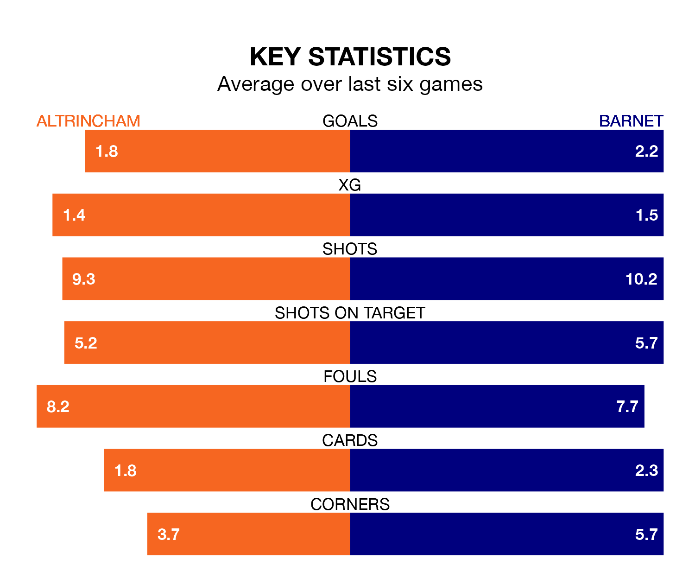

Barnet visit Altrincham at the J. Davidson Stadium on Saturday on the back of three consecutive wins in National League.
Barnet have picked up 10 points from their last six games, and they face a Robins side who drew their last match, and have collected eight points from the last possible 18.
With 53 goals in 26 games so far this season, Barnet are the league's second-highest scorers with 2.0 goals per game. And they are conceding fewer than average, letting in 36 goals at a rate of 1.4 per game.
Altrincham are also above average scorers, with 1.8 goals per game, compared to a league average of 1.5. They have conceded 1.4 goals per game.
With Laurie Walker between the sticks, the Bees can rely on one of the league's safest pair of hands. He has kept nine clean sheets in his 26 appearances this season, and no 'keeper has prevented the opposition scoring more often in National League.
In Robins' net, Ethan Walker Ross has five clean sheets in 25 games. He has conceded a goal every 73 minutes, only slightly more often than the 75 minutes between goals for Walker.
The away side are third in the table after 26 games, of which they have won 16 and drawn four, earning 52 points.
The hosts are three places behind Barnet in sixth, with 10 wins and 10 draws putting them on 40 points.
In the last five years, Altrincham and Barnet have played each other on seven occasions. Altrincham won two of them, Barnet three, and they drew twice.
On average, Robins scored 1.4 goals and the Bees 1.9 in those matches.
Their last meeting was on September 9, when Barnet won 3-0 at home.
Altrincham's last match was on Monday, a 0-0 draw against Halifax Town.
Barnet beat Southend United 1-0 last time out, on December 30, with Adebola Oluwo on the scoresheet.
Updated: 10:36, 03/01/24